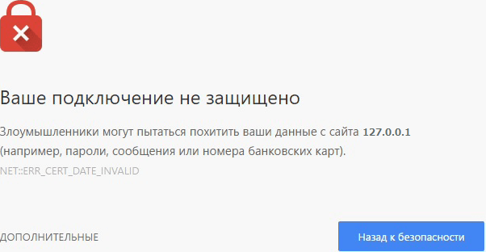

Использование HTTPS
Теория
Для режима локальной разработки протокола HTTP может быть достаточно, однако использовать его на продакшене крайне не рекомендуется. Передача данных (в том числе паролей, номеров кредитных карт и любой другой конфиденциальной информации) с помощью протокола HTTP осуществляется в открытом (незашифрованном) виде, что делает их уязвимыми к перехвату с помощью вредоносного программного обеспечения, обнаружить которое с вероятностью 100% не способен ни один антивирус. Но даже у Ваc простой сайт, не работающий с личными данными, поисковые системы занизят его рейтинг, если Вы используйте протокол HTTP.
Стандартным решением этой проблемы является протокол HTTPS — расширение HTTP, использующее криптографические протоколы SSL/TLS для обеспечения конфиденциальности обмена данными. Именно потому, что HTTPS является расширением HTTP, несмотря на использование протокола HTTPS по-прежнему актуальны такие термины, как «HTTP-запрос». Однако для того, чтобы магия HTTPS работала, во-первых, необходимо подготовить:
- Цифровой сертификат
- Большая последовательность символов, которая идентифицирует сервер и по которой браузер либо другое программное обеспечение с функцией отправки HTTP-запросов могут судить о том, насколько безопасен обмен данных с сервером.
- Закрытый ключ
- Большая последовательность символов, которую сервер сервер использует при установлении доверительного соединения с клиентом.
И цифровой сертификат, и закрытый ключ могут храниться на локальном компьютере или сервере в виде файлов, однако в конечном счёте работа осуществляется именно с последовательностями символов.
В случае продакшена цифровой сертификат и закрытый ключ необходимо (ввиду требований к безопасности) приобретать на регулярной основе из-за их ограниченного срока действия. Обычно их можно приобрести у поставщиков услуг по сдаче серверов в аренду, с которыми Вам, скорее всего, предстоит иметь дело. Существуют как платные, так и бесплатные пары сертификат-ключ, при этом, к счастью, в современности платные нужны в основном для сайтов и приложений с повышенными требованиями к безопасности (например, банковских онлайн сервисов, сайты по оказанию госуслуг и так далее).
Для режима локальной разработки сертификат и ключ можно выпустить самостоятельно. Процесс их выпуска прост, куда сложнее объясниться с браузером, что самовыпущенной паре ключ-сертификат можно доверять. Самовыпущенная пара сертификат-ключ даёт такой же уровень защиты, что и приобретаемые, однако браузеры учитывают, кем они были выпущены, и если уровень доверия окажется недостаточным, то Вы увидите в браузере примерно такое сообщение:

Странно получать подобные сообщения о возможном похищении данных в отношении разрабатываемого нами сайта или приложения, запущенного на localhost, а не в интернете, не правда ли? Связано это с особенностями работы данной технологии безопасности. Одна из них заключается в том, что доменное имя привязывается в контролируемому набору серверов, а localhost такой привязки не имеет и не может иметь, так как на каждой машине свой сервер на localhost. Кроме того, гипотетически можно настроить компьютер так, чтобы localhost вёл на какой-нибудь другой домен в интернете (eдва ли Вы захотите этим заниматься, но это может сделать вредоносное программное обеспечение). В итоге, браузерy неизвестно, что именно скрывается за localhost, а потому он не доверяет localhost наравне с опубликованными в интернете сайтами и приложениями, имеющих цифровые сертификаты сомнительного происхождения.
Как же заставить браузеры доверять самовыпущенным сертификатам? Это можно сделать без стороннего программного обеспечения, однако процесс будет зависеть от операционной системы. Проще всего сделать это кроссплатформенно с помощью утилиты mkcert. Хотя и она имеет ограничения (например, на момент весны 2024 года не поддерживался браузер Firefox для операционной системы Windows), в целом с её помощью можно заставить доверять самовыпущенным парам сертификат-ключ большинство популярных браузеров в большинстве популярных операционных систем.
Выпуск пары сертификат/ключ для режима локальной разработки
Утилита mkcert не имеет отношения к Node.js (а следовательно и к npm), потому устанавливать ещё на компьютер предстоит с помощью стандартных для конкретной операционной системы пакетных менеджеров (Chocolatey для Windows, Homebrew либо MacPorts для macOS, а для Linux установка чуть более сложная, но тоже возможна с использованием Homebrew). Актуальный способ установки утилиты Вы можете узнать на официальной странице GitHub данного проекта. Можем также предложить Вашему вниманию хорошее русскоязычное видео по mkcert, только там тестовое веб-приложением написано на фреймворке Django для языка Python, но на этом этапе нас интересует только mkcert.
После того, как установка утилиты завершена, выполните команду mkcert -install. Данная команда устанавливает на компьютер центр сертификации (Certification authority), задача которого — подтверждать подлинность ключей шифрования. Эту команду достаточно выполнить один раз вне зависимости от того, сколько сертификатов и ключей Вы выпустите.
Итак, нам нужно, чтобы браузер доверял сертификату, который мы выпустим для URI https://127.0.0.1, а также, желательно, для https://localhost. Несмотря на то, что localhost и 127.0.0.1 это, фактически, одно и то же, mkcert должен объясняться перед браузерами за каждый из них в отдельности, потому и указать их при выполнении команды выпуска сертификата тоже необходимо оба:
mkcert localhost 127.0.0.1
Появится сообщение о том, что были созданы файлы localhost.pem и localhost-key.pem, а также срок действительности эти файлов:
Created a new certificate valid for the following names 📜 - "localhost" - "127.0.0.1" The certificate is at "./localhost+1.pem" and the key at "./localhost+1-key.pem" ✅ It will expire on 18 July 2026
Согласитесь, не очень-то и понятно по именам файлов, что в них содержится, а потому мы их переименуем. Вообще, можно было указать имена файлов и через консольную команду, но при вводе длинной консольной команды легко ошибиться, потому переименуем в фалы с использование графического пользовательского интерфейса: localhost.pem в SSL_Certificate.pem, а localhost-key.pem в SSL_Key.pem. Хотя и с такими именами файлов всё ещё не понятно, к какому проекту соответствующе сертификат и ключ имеют отношение, ввиду того, что эти файлы будут храниться и использоваться только в данном проекте, можно остановиться на этих именах. Поместим эти файлы в папку SSL проекта.
Код приложения
YDB поддерживает HTTPS без плагинов. Всё что нужно — указать пути к выпущенным ранее SSL-сертификату и ключу. Соответствующие свойства 1-ого параметра у метода initializeAndStart находится в группе HTTPS — её мы будем указывать на этот раз вместо HTTP:
import {
Server,
Request,
Response,
ProtocolDependentDefaultPorts,
HTTP_Methods
} from "@yamato-daiwa/backend";
import Path from "path";
Server.initializeAndStart({
IP_Address: "127.0.0.1",
HTTPS: {
port: ProtocolDependentDefaultPorts.HTTPS,443. Опять же, нет необходимости это запоминать — достаточно осознавать, будем ли мы использовать порт по умолчанию или же какой-то другой. SSL_CertificateFileRelativeOrAbsolutePath: Path.resolve(__dirname, "./SSL/cert.pem"),
SSL_KeyFileRelativeOrAbsolutePath: Path.resolve(__dirname, "./SSL/key.pem"),Указываем пути к сертификату и ключу, созданных ранее. Относительные пути (SSL/cert.pem и SSL/cert.pem соответственно) тоже в данном случае будут работать, но абсолютные пути надёжнее.
Если у Вас вместо файлов сертификата и ключа уже имеются готовые строчные значения, то вместо этих двух свойств укажите SSL_Certificate и
routing: [
{
HTTP_Method: HTTP_Methods.get,
pathTemplate: "/",
async handler(_request: Request, response: Response): Promise<void> {
return response.submitWithSuccess({ HTML_Content: "<h1>Hello, world!</h1>" });
}
}
]
});
Группа свойств HTTPS не исключает группу HTTP если используются разные порты, однако если у Вас есть возможность поддерживать протокол HTTPS, а поддерживать HTTP особых причин нет, то от последнего лучше отказаться. В последующих уроках хорошо было бы использовать только протокол HTTPS, чтобы выработать к нему отношение как стандарту безопасности. Но к сожалению, многие читатели не последуют нашей рекомендации изучать уроки последовательно, а потому столкнутся с трудностями при обеспечении поддержки HTTPS в последующих уроках, из-за чего начиная со следующего урока мы вновь будет использовать протокол HTTP.
Тестирование
Запустим приложение с помощью ts-node EntryPoint.ts. На этот раз у нас прослушивание входящих запросов осуществляется на https://127.0.0.1:443 (двоеточие и номер порта можно опустить, если порт по умолчанию). Откроем этот адрес в браузере. Если все описанные ранее действия выполнены верно, а mkcert поддерживаем Ваш браузер, то а браузере отобразиться страница с заголовком Hello, world!. Проверьте также https://localhost:443.